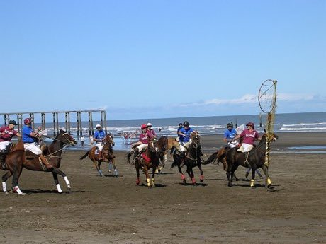

Home / Classical Worlds / The Americas: Andes and South America
Playable heritage gamePato
Also known as horseback ring-ball
Riders on the Argentine plains carry a leather ball with six handles and try to throw it through a tall ring held high. In this version two riders cross the field and you must time your throw to meet a ring.

How to play
- Press and hold to wind up your arm: the ring on the ground shows where the ball will come down.
- Lead a rider. Release when the target ring sits over the hoop the horseman is carrying.
- Each round gives you eight throws and there are two rounds. Aim for the middle of the ring to score the most.
Rules at a glance
- The ball flies to the spot marked when you let go, moved a little by the wobble of your hand and by how short your wind-up was.
- A ball that goes clean through the middle of the ring scores 3.
- A ball that passes through but touches the leather inside scores 2.
- A ball that hits the rim and bounces away scores nothing.
- Two riders cross from side to side, one with a smaller ring worth 4, so aim ahead of the ring, not at it.
- Eight throws make a round; two rounds make a game, and your best total is kept.
About the tradition
Pato has been played on the plains of Argentina since at least the early 1600s and was named the national game in 1953. The old game used a live duck, which is where the name comes from; today a leather ball with handles is used and the animals are the riders' partners, so their care comes first.
Origins
Usually placed in the era of Classical Worlds (about 1000 BCE to 500 CE), although its exact origins are uncertain, within the cultural world of The Americas: Andes and South America.
Credits
- Photo reference: Wikimedia Commons, Patogame.JPG (CC BY-SA 3.0)
- Photo: The original uploader was Y1997xf11 at English Wikipedia., CC BY-SA 3.0, source on Wikimedia Commons
- Text: CC BY-SA 4.0, World Heritage Games.
Sources

Get the app
Pato is coming to the App Store and Google Play. One app, many traditions, no account needed.
More games to play

Sahel Salt Caravan
Niger +1 · Sports with animal partnersPlay preview · in the Story & Theatre of the World app


Bandoneon and tango rhythm
Argentina +1 · Musical instrumentsPlay preview · in the Drum Music of the World app
More from Argentina


Malambo
Argentina · Dances
Mate Pouring
Argentina · Crafts and making
Payada
Argentina +1 · Wrestling and martial sports